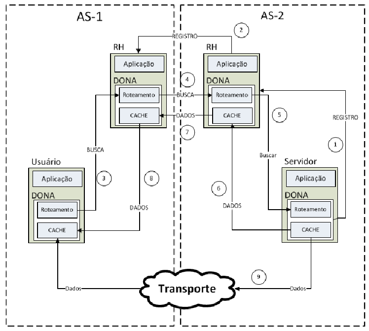
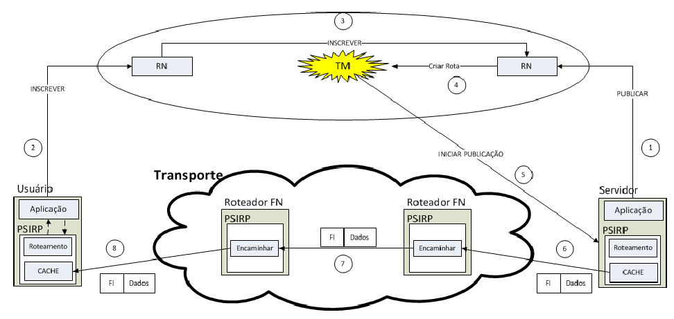
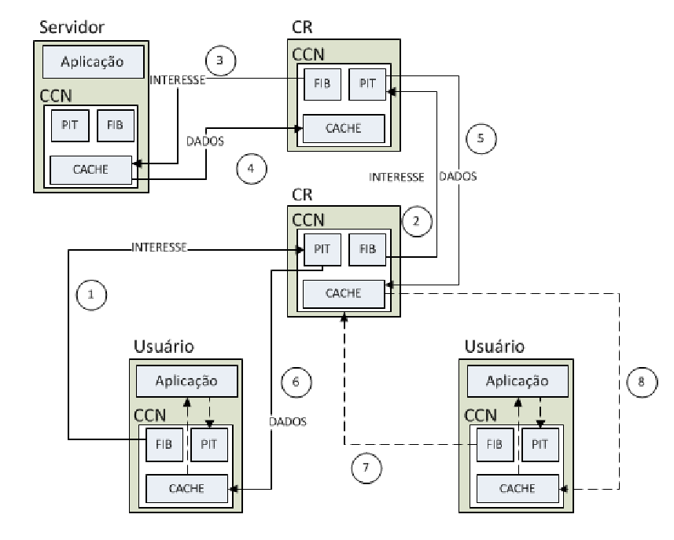
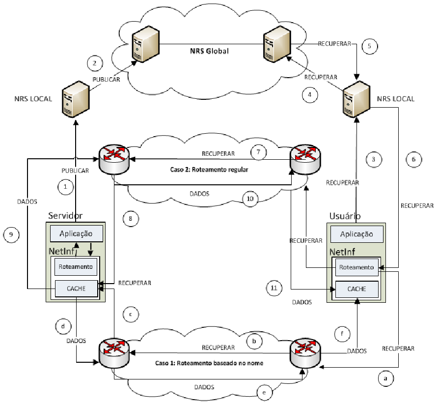

Modelos Gerais
Apesar de ser um conceito relativamente novo, já existem na literatura projetos de arquitetura ICN completos. Abordaremos os seguintes projetos: DONA (Data-Oriented Network Architecture), PURSUIT (Publish-Subscribe Internet Technology), NDN (Named Data Networking) e NetInf (Network Information).
DONA
É um projeto da universidade de Berkeley, um dos primeiros de uma arquitetura ICN completa. A nomeação em DONA é feita de forma flat, ou seja, os nomes da informação passam a não depender de sua localização, facilitando seu armazenamento e disponibilidade na rede. Um conteúdo em DONA é dividido em fragmentos atrelados a um gerenciador. Seus nomes são em função de um hash da chave pública do gerenciador mais uma etiqueta, para que o gerenciador possa o reconhecer unicamente. A resolução é feita por meio de Resolution Handlers. Os RHs são interconectados de forma a termos uma resolução de nomes hierárquica. Para fazer com que uma informação fique disponível o gerenciador envia uma mensagem para um RH local com o nome do objeto. Esse RH então propaga o registro para outros RHs, sempre apontando para o caminho inverso de propagação. O roteamento de dados pode ser feito de forma acoplada ou desacoplada. Na acoplada é passado o caminho feito pela requisição entre os RHs para a transmissão dos dados ao usuário. Na desacoplada o dado pode ser passado diretamente ao usuario por roteamento IP com o servidor fonte.

Imagem 1. Exemplo de um cenário utilizando a arquitetura DONA. [4]
PURSUIT
A arquitetura do PURSUIT é composta principalmente por três funções: rendezvous, gerenciador de topologia e encaminhamento. A função de rendezvous relaciona pedidos aos seus devidos conteúdos, então o gerenciador de topologia estabelece uma rota entre o servidor e o usuário. A função de encaminhamento então envia por tal rota os dados para o usuário. A nomeação nessa arquitetura é feita por IDs de escopo e ID de rendezvous. Os IDs de escopo hierarquizam os objetos e o ID de rendezvous é único e identifica o conteúdo como um todo. A resolução de nomes do PURSUIT é feito por Rendezvous Nodes que informam para o servidor que um usuário deseja algum conteúdo. O gerenciador de topologia então encontra um caminho até o usuário através de Forwarding Nodes, que encaminham os objetos até o usuário.

Imagem 1. Exemplo de um cenário utilizando a arquitetura PSIRP. [4]
NDN
A nomeação na arquitetura NDN é hierárquica e de certa forma similar às URLs. A hierarquia é feita por prefixos, ou seja, se pedirmos uma informação com certo prefixo, todos os segmentos filhos (com mesmo prefixo) poderão atender a essa requisição. Para requisitar os objetos da informação os usuários enviam mensagens de Interesse. Os objetos são devolvidos por mensagens de Dados. As duas mensagens carregam o nome do objeto. As mensagens são encaminhadas através de roteadores de conteúdo (CRs). Cada CR contém três importantes estruturas: a base de informação de roteamento (FIB), a tabela de interesses pendentes (PIT) e a área de armazenamento de conteúdo (CS). O PIT armazena os pedidos que estão pendentes e os repassa ao FIB para que, caso o CS não tenha o conteúdo, repasse o pedido a algum outro CS. Ao encontrar o conteúdo o mesmo é passado de volta pelos CRs removendo as entradas de interesse dos PITs e gravando o conteúdo nos CSs ao longo do caminho.

Imagem 1. Exemplo de um cenário utilizando a arquitetura NDN. [4]
NetInf
Essa arquitetura é bem genérica, combina elementos das arquiteturas NDN e PURSUIT além de poder ser implementada por diferentes tecnologias de roteamento e de encaminhamento. Os nomes NetInf seguem um padrão URI ni://A/L, onde o A representa o nome da autoridade e o L o local. Podem ser hashes ou palavras. A resolução de nomes é feita por um sistema de resolução de nomes (NRS) que implementa uma hash table distribuída. Para disponibilizar uma informação o servidor publica uma mensagem com seu local para o NRS mais próximo que processa todos os locais com mesma autoridade e envia para o NRS global. Para um usuário requisitar um conteúdo ele envia uma mensagem de requisição para o NRS local, que consulta o NRS global, retornando a localização do objeto desejado. O usuário então requisita o conteúdo ao servidor que lhe foi passado, recebendo posteriormente os dados em mensagens de dados. A arquitetura NetInf armazena os dados pelo caminho nos CRs e também prevê a implementação de objetos em larga escala e formas de cooperação com o NRS.

Imagem 1. Exemplo de um cenário utilizando a arquitetura NetInf. [4]